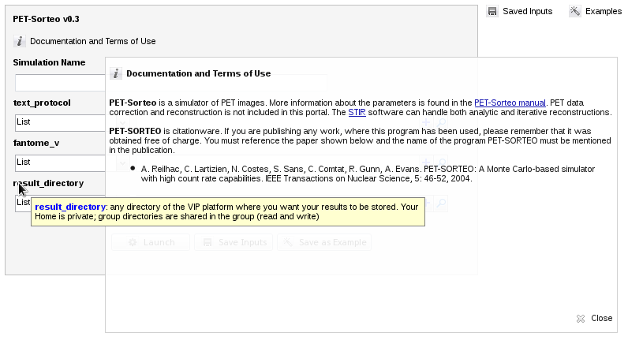

Simulator Descriptions
VIP hosts several applications but the following 4 simulators received special attention.
Don't hesitate to contact us in case you want to access another application.
Field II
FIELD-II has 3 inputs:
- "ProbeParameters_mat" is a Matlab mat file containing parameters for the US probe to use and image to generate. It has two structures (names must be respected):
- "probe" contains the probe-specific parameters:
- f0: is the central frequency of the transducer elements
- lambda: is the wavelength associated assuming a sound speed of 1540m.s-1
- pitch: is the distance (in meters) between the center of two consecutive elements
- kerf: is the distance between two elements
- width: is the width of one element (note that pitch = kerf + width)
- element_height: is the height of each element
- focus: is the elevation focus of the transducer
- n_sub_x and n_sub_y are the number of subdivisions in the lateral and elevation direction used for calculating the elements response. They are field II parameters which are necessary if you want the elevation focus to be taken into account.
- n_elements: is the number of elements of the probe
- impulse_response: is the elements impulse response sampled at fs
- dimension: 1 for linear of phased array, 2 for 2D matrix array
- "img" contains the parameters specific to the imaging sequence. Note that not any kind of imaging sequence can be simulated. Only a linear array imaging, a sector scan using a phased array and a 2D matrix array imaging can be simulated. In terms of parameters : dynamic focusing and apodization can be used in transmit and in receive or multi focusing and apodization using zones can also be used.
General parameters:
- c: speed of sound usually 1540m.s-1
- fs: sampling frequency
- excitation: excitation pulse used for each element
- linear: parameter to say if linear (1) or sector (0) scan is used To be used only if the probe is 1D
- n_lines: number of lines in the image
- n_active: number of active elements
- rx_dynamic_focus: set to 1 if dynamic receive focusing is expected
- tx_dynamic_focus: set to 1 if dynamic transmit focusing is expected
- rx_cst_apo: set to 1 if constant receive apodization is used
- tx_cst_apo: set to 1 if constant transmit apodization is used
- tx_focal_zones: focal zones are used if dynamic focusing is switched off. Zones corresponds to the different depths of focusing
- tx_focus_times: Focus times corresponds to the time after which a focal point becomes the current focal point.
- rx_focal_zones, rx_focal zones, same as previsously but in receive
- rx_apo_zones, rx_apo_times, tx_apo_zones, tx_apo_times : same as previsouly but for the apodization
- tx_apo_vector, rx_apo_vector: transmit and receive apodization matrices (can be a vector in case of constant tx or rx apodization). For the 2D matrix has to be calculated to fit for 2D matrices used in Field II
Parameters for sectorial imaging:
- sector: size in radians of the sector
Parameters for linear imaging:
- width = width of the final image
Parameters of 2D matrix arrays:
- sector_phi : size of the sector in lateral dimension
- sector_theta : size of the sector in elevation
- nlines_by_plane : number of lines by plane (the number of plane is calculated by dividing number of lines by number of lines by plane)
- "TissueParameters_mat" is a Matlab mat file containing two structures describing the scatterers used in the simulation:
- points is a matrix of size n x 3 containing the positions of the scatterers
- amplitudes is a matrix of size n x 1 containing the scattering coefficients of the scatterers
- "SimulationDirectory" is the output directory where the simulation results will be stored (a unique directory will be created)
SIMRI
Simri (http://www.simri.org/) is a 3D MRI simulator based on the Bloch equation. It takes into account the main static field value and enables realistic simulations of the chemical shift artifact, including off-resonance phenomena. It also simulates the artifacts linked to the static field inhomogeneity like those induced by susceptibility variation within an object.
Simri has 2 inputs:
- "outputDir" is the output directory where the simulation results will be stored (a unique directory will be created)
- "inputZip" is a zip file containing :
- mdh/raw label file describing the object model
- labelToMatter.txt file - associates the labels used with generic matter names
- matters.xml file - associates physical values (rho, t1, t2, t2star and their standard deviation) to each matter type
- params.txt file - defines simulation parameters such as tacq, TE, TR, teta, pulsedur, seqname)
Sindbad
See documentation available in Sindbad application: in Home, click on "Sindbad v[x]", then "Documentation and terms of use" and/or move the pointer over the simulator inputs:

PET-Sorteo
See documentation available in PET-Sorteo application: in Home, click on "PET-Sorteo v[x]", then "Documentation and terms of use" and/or move the pointer over the simulator inputs:
